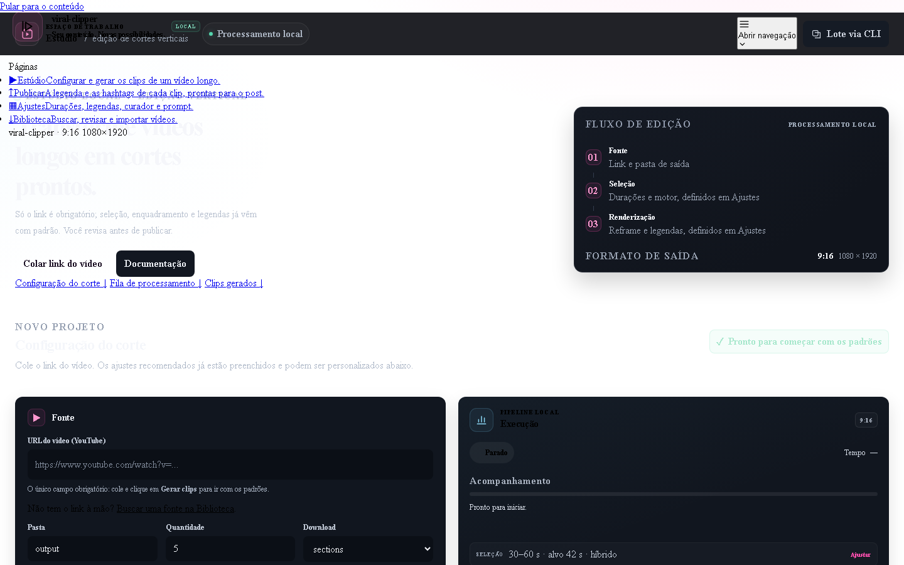
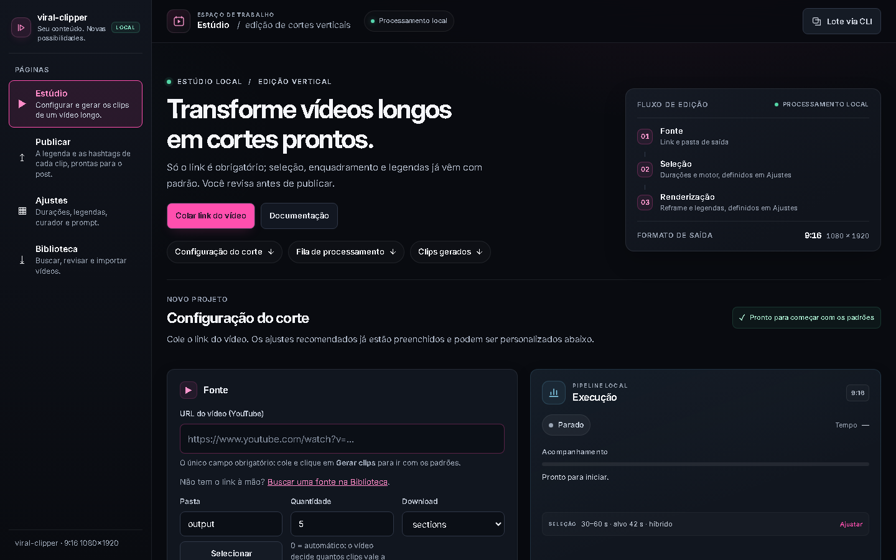

shared.cssCommit 0585a68 ("A marca do rodapé vira componente…"). A refatoração
levou o componente footer-brand para o rail e, no caminho, o bloco
.rail-brand { perdeu o } de fechamento.
Um bloco aberto até o fim do arquivo faz o navegador jogar fora a folha inteira: sem rail, sem header, sem layout. O menu vira uma lista de links azuis.

}.rail-brand {
display: flex; align-items: center; gap: 10px;
...
margin-bottom: 14px;
/* ← aqui faltava o `}` */
.rail-brand .footer-brand { gap: 10px; }
| Medida | Valor |
|---|---|
Chaves { / } |
106 / 105 — desbalanceado |
| Profundidade no fim do arquivo | 1 bloco aberto |
| Efeito no navegador | folha inteira descartada |
Uma linha: o } que fecha .rail-brand. Rail, header,
tipografia e layout voltam.

| Medida | Valor |
|---|---|
Chaves { / } |
106 / 106 — balanceado |
| Profundidade no fim do arquivo | 0 |
Assets do painel (*.css, *.js) |
9 de 9 balanceados |
Os testes de CSS procuram seletor por regex. Um arquivo cuja chave nunca fecha continua casando com os padrões que eles procuram — a folha quebrada passou verde na suíte inteira. O balanceamento é a única checagem que olha o arquivo inteiro em vez de procurar uma agulha nele.
Adicionado StylesheetWellFormedTests em
tests/test_web_server.py: percorre toda folha, tira comentários e strings
(content: "{" é texto, não chave) e exige que a profundidade termine em zero e
nunca fique negativa. A checagem foi validada contra o blob real do commit quebrado —
0585a68:web/shared.css → 1 bloco aberto, reprova; o atual →
0, aprova.
Correção do }: commit 007aeb0.
Guarda de regressão: tests/test_web_server.py.
Suíte: 545 testes + 681 subtestes, sem falhas.
Capturas por Playwright contra 127.0.0.1:7755; a única diferença entre as duas
imagens é o corpo de /shared.css.